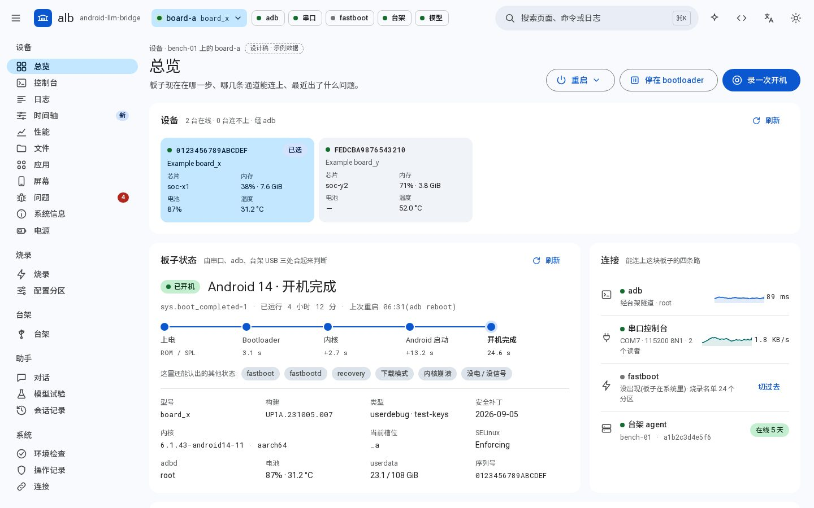
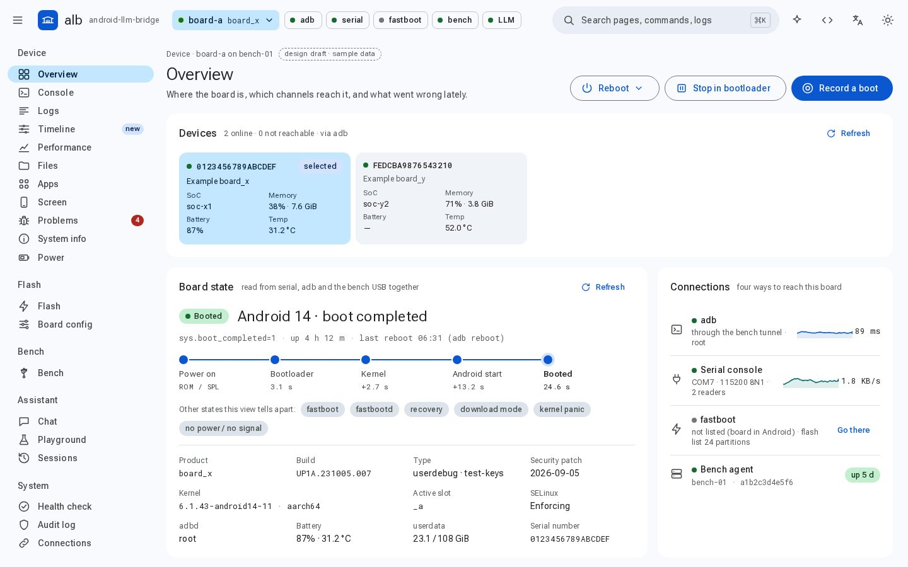
总览
设备打开网页先看这里:哪些设备在线、当前板子停在开机的哪一步、四条通道哪几条能连上、上次开机慢在哪一段、最近有哪些崩溃。页面下方是整个 alb 服务的概况:哪些模型后端能用、有没有正在跑的 AI 会话。
打开交互设计稿hub 在 /app/ 提供网页界面:看板子状态、开 adb shell 和串口、查日志、把各路日志对到同一条时间轴、用 fastboot 烧录、管理台架电脑,任何页面都能拉出助手。界面按 Google 的 Material 3 规范做,有浅色和深色,中文和英文同等对待。
下面的截图和设计稿用的都是示例数据,不连任何板子。要用真正的界面,启动 alb-api(默认端口 8765),再打开 http://<host>:8765/app/。
每张图都能点开交互设计稿:菜单能展开、页签能切换、助手能拉出来。真正的界面用同一份样式表做出同样的页面。


打开网页先看这里:哪些设备在线、当前板子停在开机的哪一步、四条通道哪几条能连上、上次开机慢在哪一段、最近有哪些崩溃。页面下方是整个 alb 服务的概况:哪些模型后端能用、有没有正在跑的 AI 会话。
打开交互设计稿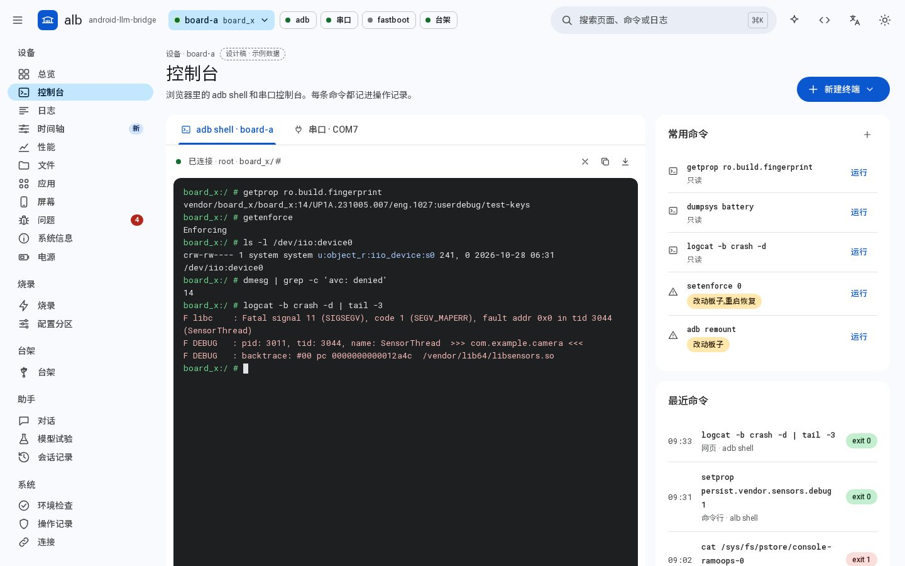
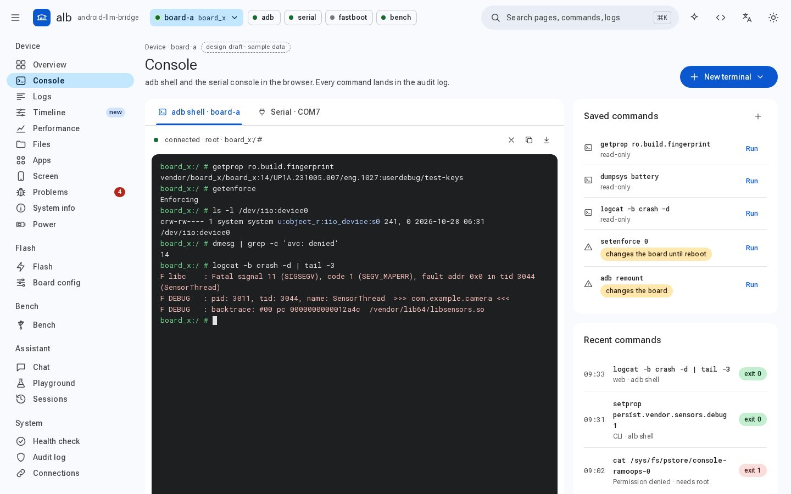
在浏览器里开 adb shell 和串口控制台,一个页签一个;常用命令点一下就跑,每条命令都记进操作记录。串口页签有「键盘输入」开关,关着时按键不发给板子,免得误按停住开机倒计时。
打开交互设计稿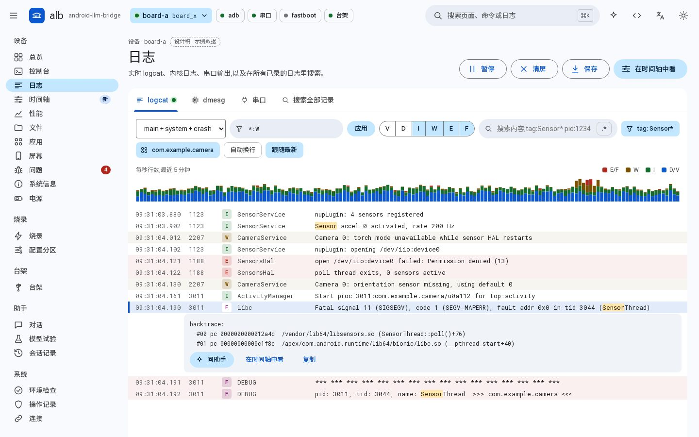
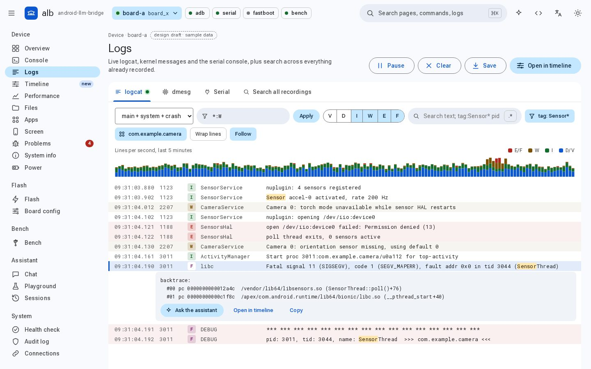
实时看 logcat、内核日志和串口输出,按级别、tag、关键字过滤,也能在所有已录下的日志里搜。串口输出可以抓一段存成文件,抓过的文件列在页面上,能打开也能删;看中某一行,可以跳到时间轴看它前后发生了什么。
打开交互设计稿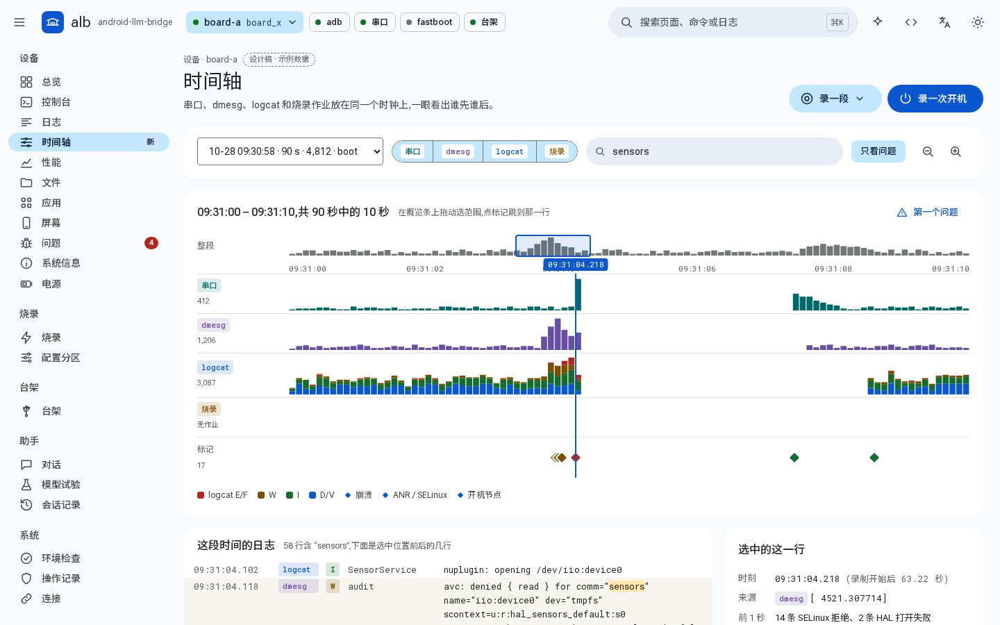
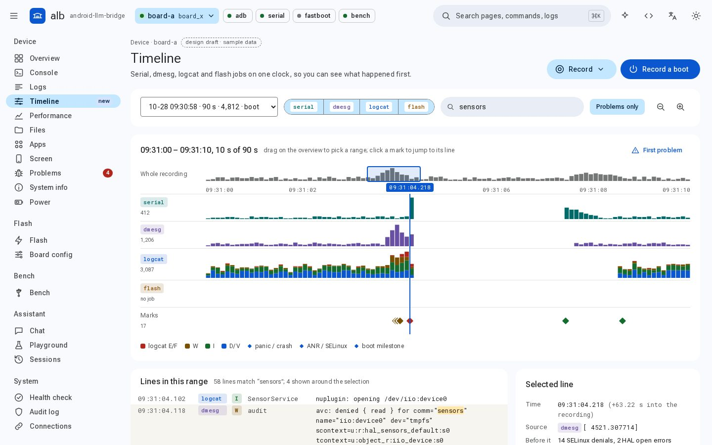
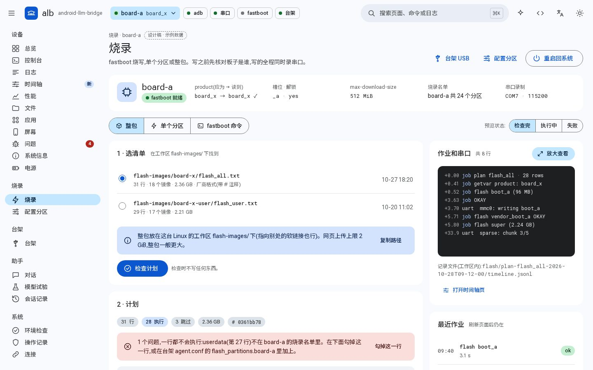
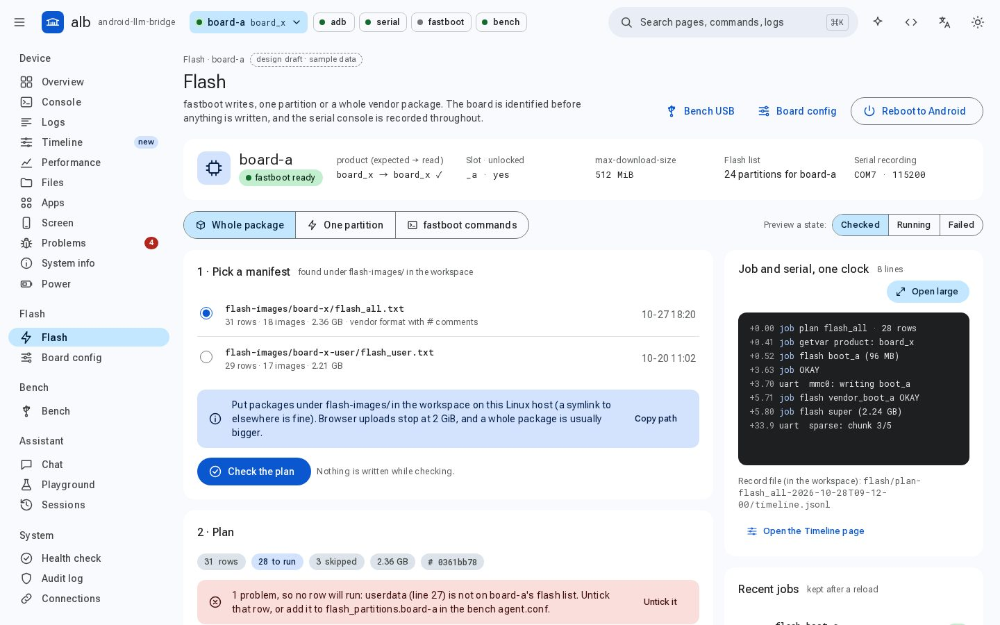
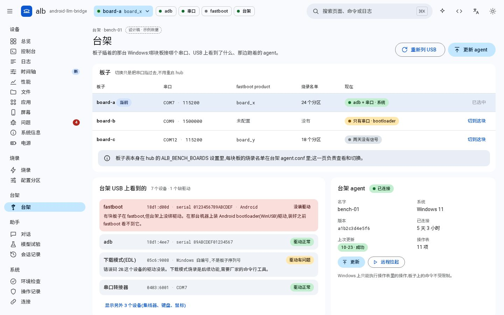
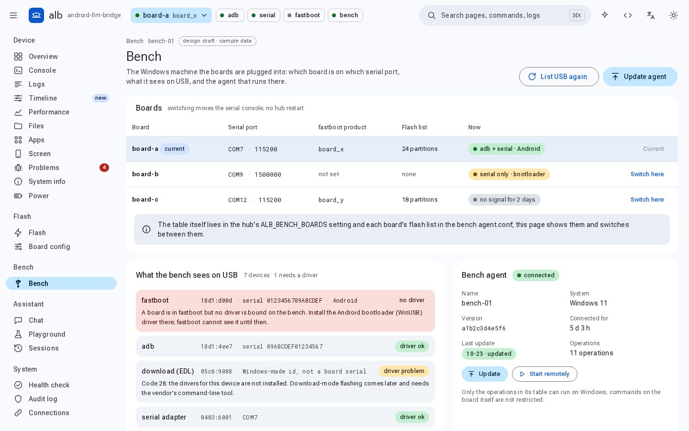
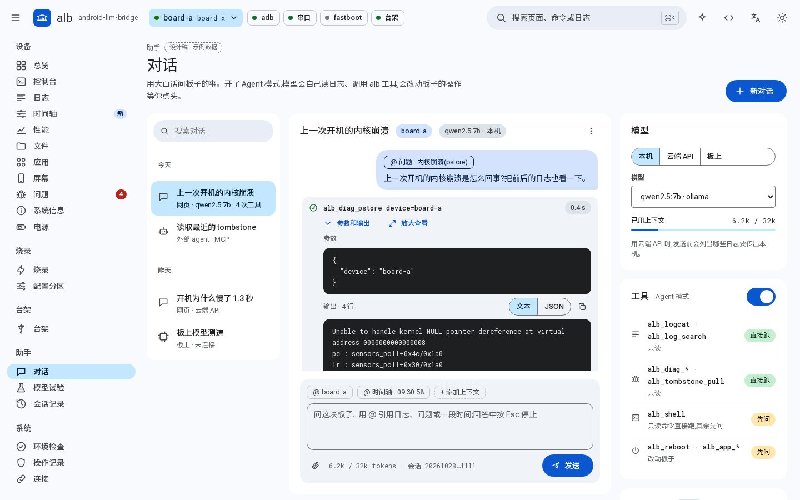
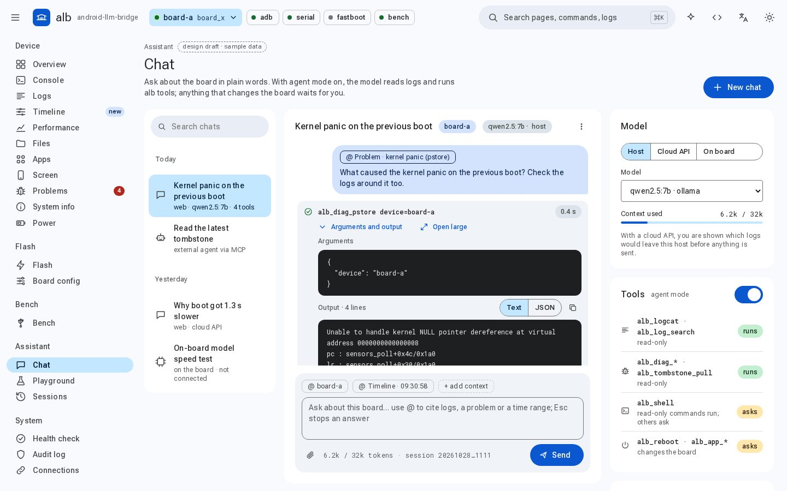
用大白话问板子的事,用 @ 引用一段日志、一个问题或一段时间。开了 Agent 模式,模型会自己读日志、调用 alb 工具,每次调用都能展开看参数和输出,长输出可以放大查看;模型可以跑在本机、云端 API 或板子上。
还没做的:后端还不会在工具改动板子前先问你(设计稿里画了这一步);板上模型目前只能探测板子上有没有推理服务。
打开交互设计稿所有页面共用一个外框,不管在哪一页,当前板子和它的通道状态都在眼前。
一直显示当前板子,以及 adb、串口、fastboot、台架四条通道的状态。切换板子也在这里。
分设备、烧录、台架、助手、系统五组。按 Ctrl/⌘ K 搜索页面;旧的 /inspect/… 地址会自动跳到新页面。
任何页面都能从顶栏拉出来,和对话页共用同一段对话。总览、日志、时间轴、问题页上的一行日志或一次崩溃,可以带着上下文直接交给它。
两种语言同等对待,不是一种翻译另一种。字体随页面打包(Roboto Flex、Roboto Mono 和 Noto Sans SC 常用字子集),不从网上加载。
默认跟随系统,也可以固定浅色或深色。颜色都用 M3 的颜色角色(--md-sys-color-*),换主题只换这一组值。
宽屏是导航抽屉,中等宽度变成窄的导航栏,手机上收进菜单按钮。卡片排成一列,宽表格在卡片里横向滚动。
v2 设计稿用的是另一套配色,已经被 v3 取代,留在这里只做对照。